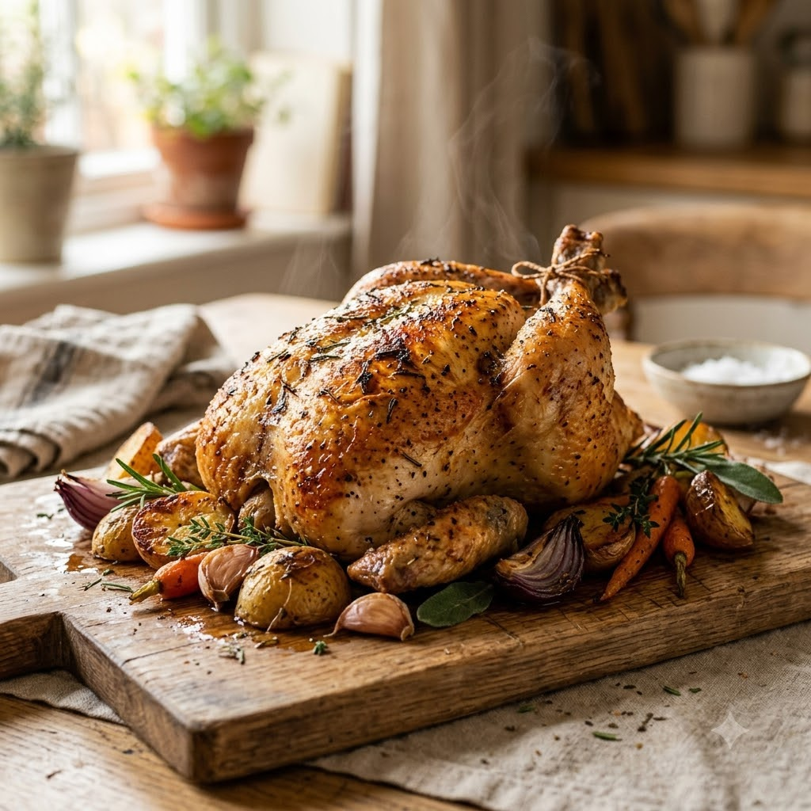

Whole Roast Chicken

Whole Roast Chicken
Airfryer – Roast 180°C 48 min — Serves 4
🔥 Airfryer🍽 Serves 4
Prep ahead: Rub the chicken with oil and spices at least 1 hour ahead (or overnight in the fridge) for deeper flavour.
Ingredients
- 1 whole chicken (~1.2kg)
- 2 tbsp oil
- 1 tbsp mixed herbs
- 1 tsp paprika
- 1 tsp garlic (lehsun) powder
- Salt & pepper to taste
Method
1Preheat: Preheat the Airfryer to 180°C for 4 minutes before adding the food to the basket.
2Pat chicken dry; rub all over and under the skin with oil and spice mix.
3Place breast-side down in the basket; roast at 180°C for 25 minutes.
4Flip breast-side up and roast a further 22 minutes until juices run clear.
5Rest 10 minutes before carving.
Tip: Check internal temperature reaches 74°C at the thickest part of the thigh.